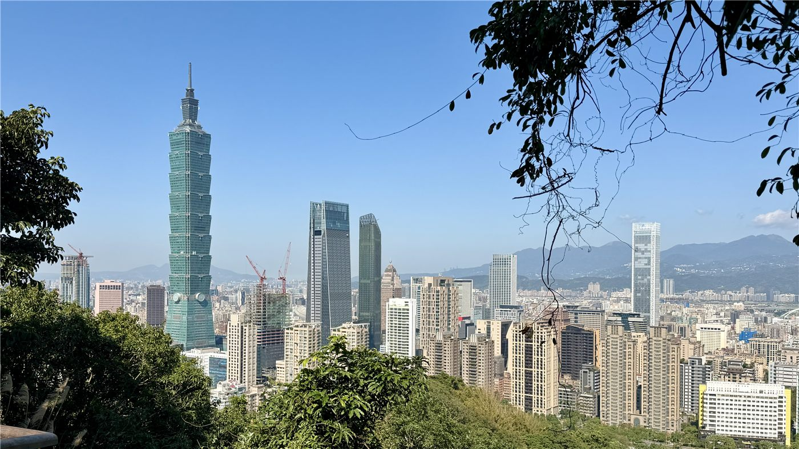
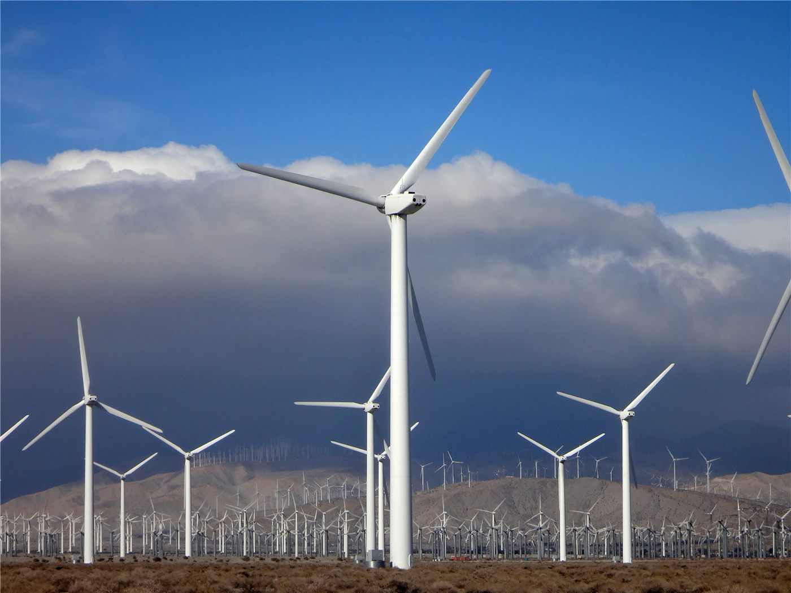
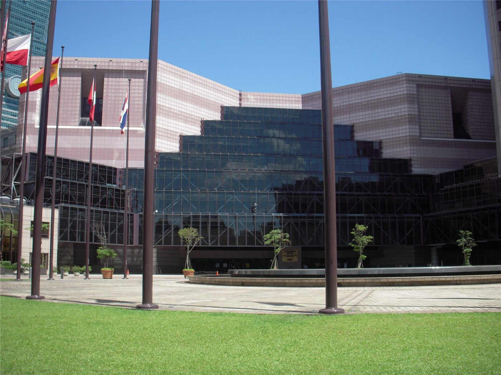
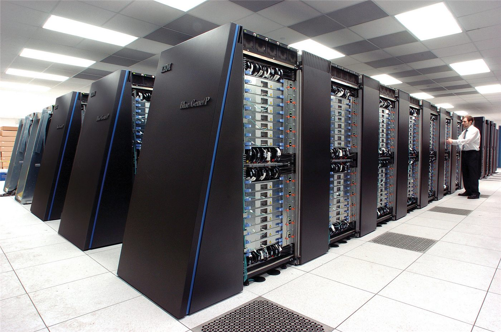
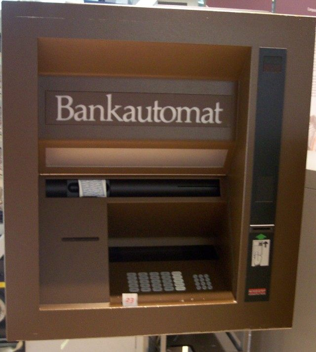
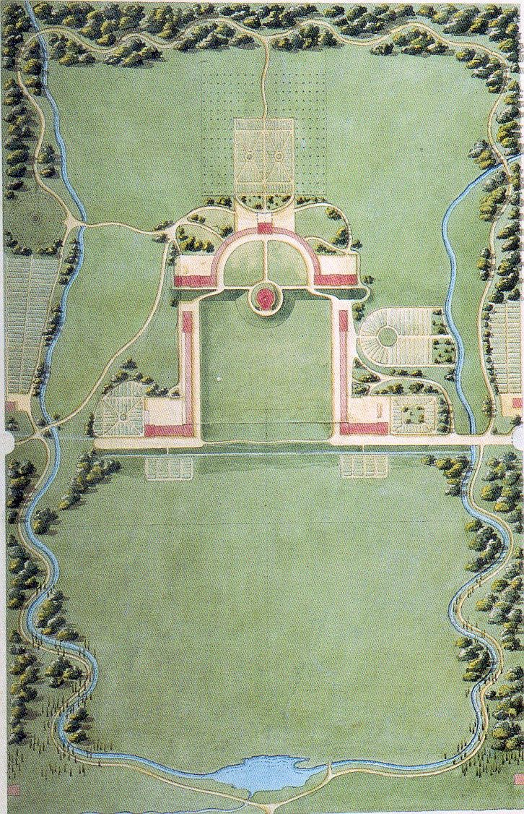
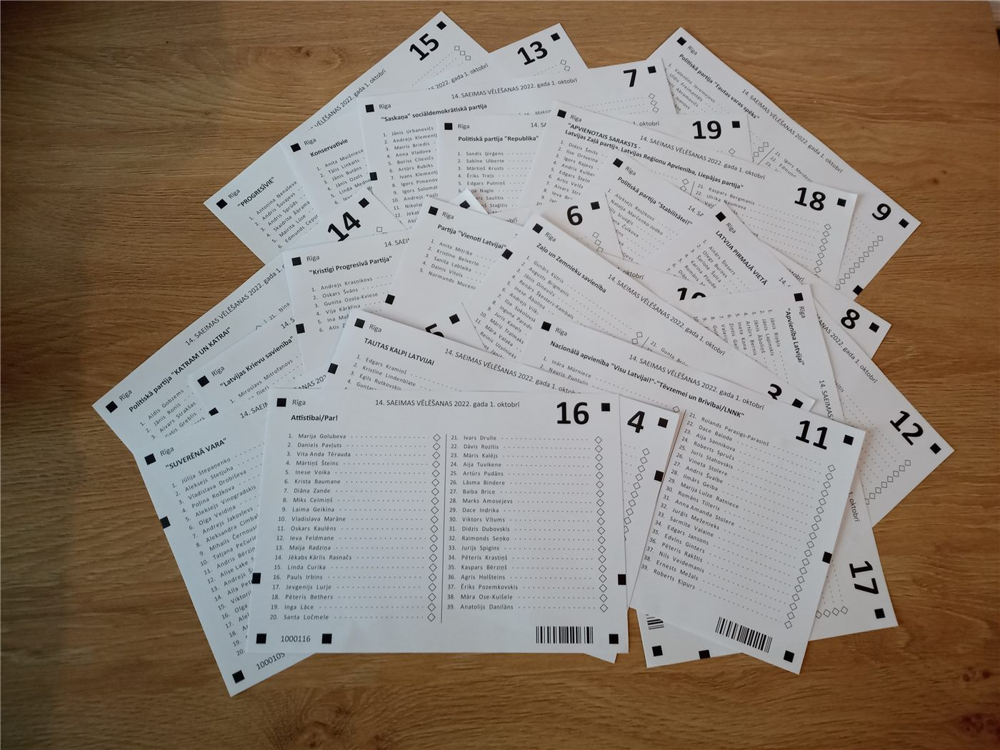

橋대만
대만라이칭더 대만 총통 취임 2주년… '인재·민생' 국정 행보
취임 2년을 맞은 라이칭더 총통이 평화·안정과 민생을 국정 기조로 제시했다. 대만은 인재 유치 제도를 본격 시행 중이다.
취임 2년을 맞은 라이칭더 총통이 평화·안정과 민생을 국정 기조로 제시했다. 대만은 인재 유치 제도를 본격 시행 중이다.

해외 화인 청년의 취업·정착 문이 넓어졌다. 졸업생은 허가 없이 2년 근무, 전문인력은 1년 거주 후 영주 신청.
대만 행정원이 특별조례를 통해 약 2,100억 대만달러(약 66억 달러) 규모의 무인기(드론)와 무인정(USV) 도입을 확정했다. 비대칭 방위 역량을 강화하려는 대규모 조달이다.

스위스 국제경영개발대학원(IMD)의 세계 경쟁력 보고서에서 대만의 순위가 4위로 올랐다. 경제 성과와 정부 효율, 기업 효율 등에서 좋은 평가를 받았다.

대만의 전력 수요가 앞으로 10년 동안 두 배로 늘어날 것이라는 전망이 나왔다. 첨단 산업과 데이터센터 확장이 수요 급증의 핵심 요인으로 꼽힌다.

대만 증시가 미국 연준의 매파적 기조에도 아랑곳없이 5만 선 돌파를 정조준하고 있다. 기관 투자자들은 기업 실적 등 펀더멘털에 악재가 없다고 진단했다.
천젠런 전 부총통이 대만 최고 학술기관인 중앙연구원(中研院) 원장에 취임했다. 그는 중앙연구원을 아시아·태평양의 탁월한 연구기관으로 키우겠다는 포부를 밝혔다.

대만의 스타트업들이 국제 행사의 '대만관(Taiwan Pavilion)'에서 인공지능(AI) 기술을 선보였다. 신생 기업의 혁신 역량을 세계에 알리는 자리가 됐다.

대만 형사경찰국(CIB)이 ATM(현금자동입출금기)의 사기 방지 기능을 소개했다. 보이스피싱과 송금 사기로부터 시민을 보호하기 위한 조치다.

마약 문제에 대응해 대만 행정원이 학교에 '제5급 보안'을 배치하는 방안을 검토하자, 시민단체가 '황당하다'며 반발했다. 청소년 마약 예방의 방법론을 둘러싼 논쟁이다.

대만이 연말 9합1 지방선거를 앞두고 본격적인 경쟁에 들어갔다. 세 곳의 핵심 격전지에서 각 당이 판세 뒤집기를 노리며, 여야 당대표의 정치력이 시험대에 올랐다.
대만의 인기 먹거리 행사 '500그릇 먹거리 시장(小吃市集)'이 타이베이에서 2차 출점에 들어갔다. 줄 서서 먹는 유명 맛집들이 한자리에 모여 미식가들의 발길을 끌고 있다.